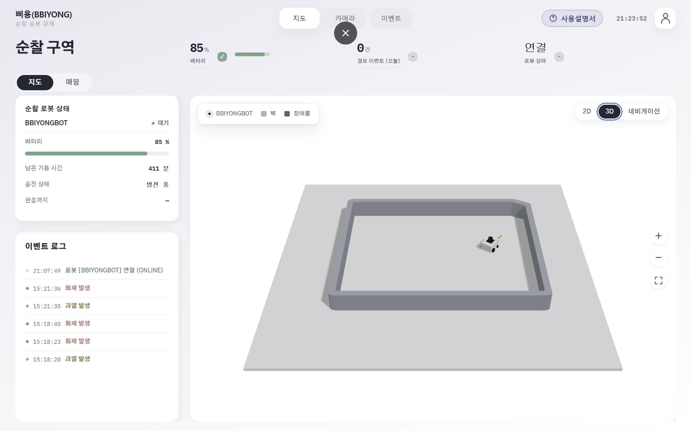

012026.07 — 08
실시간 로봇 관제 · 6인 팀
삐용 BBIYONG
2D 공장 지도 생성부터 점검 지점 순찰·화재 관제까지 연결한 시스템
서비스
사람이 적은 시간에도 공장 안의 사각지대를 확인하기 위한 자율 순찰·관제 서비스입니다. 로봇이 공장을 자율주행하며 2D 지도를 만들고, 지도에 점검 지점을 지정하면 해당 지점들을 순찰합니다. 순찰 중 화재 징후를 확인하면 현장 영상과 경보를 웹 관제로 전달합니다.
- 2D 지도 생성 → 점검 지점 지정 → 지정 지점 자율 순찰
- RGB·열화상 화재 확인, 웹에서 위치·영상·경보 확인 및 원격 제어
- 담당
- 팀장 · Spring Boot 관제 서버, 인증, 로봇/웹 통신, 배포
- 기술
- Java, Spring Boot, WebSocket, STOMP, Docker, AWS EC2
영상 지연을 통신 경로에서 찾았습니다
로봇 영상이 약 6초 늦게 도착해 경보 직후 현장을 확인하기 어려웠습니다. 상태·제어 메시지와 영상의 전달 경로를 분리하고, 영상은 SRT·MediaMTX·WebRTC 경로로 전환했습니다. 프로젝트에서 기록한 지연은 약 0.3초까지 줄었습니다.
영상 헤더 규격이 달라 연결이 끊겼습니다
로봇이 보낸 영상 헤더는 40바이트인데 서버가 49바이트로 해석해 연결에 실패한 적이 있습니다. 실제 송수신 데이터를 대조해 길이 불일치를 찾고 프로토콜 상수를 통일했습니다.
로봇 주행과 AI 모델 최적화는 다른 팀원이 맡았습니다.
